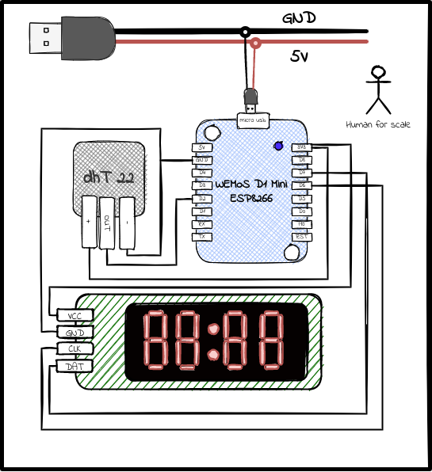

Temperature Measurement with ESP8266 and DST22
ESP8266 based circuit boards are great for projects that needs wireless communications. They have very low form factor and can accomplish a lot. Combined with sensors like DHT22, we can make a great temperature sensors. This is what I was trying to achieve with this project.
🧭 The Problem
The aim is to create a sensor that can show temperature and humidity in the different rooms of my house. This information then I can use to do some home automations like open windows, turn up heater, or just to prepare my self the condition at home 🥶 🥵
- Wemos D1 Mini (
ESP8266based board) - DHT22 temperature and humidity sensor
- MQTT broker (like mosquitto)
- TM1677 7-segment display module
🔌 The Circuit
Here is the circuit setup I started with.

As always, I am using USB cable to power the circuit board. I think this is the easiest way to safely set input voltage with current limiter in place. I just use old phone chargers. There are plenty of them in this world.
The 7-segment display is not really necessary. As I am publishing temperature to MQTT and I can just monitor from some app like Home Assistant. But I wanted to have both ways to checking temperature, from the display and from my phone as well.
🕸 The Network
First, we will configure the wifi so that wemos can connect to our home wifi network. We include following header files and configuration and initialize wifi and pubsub client. The pubsub client will read and publish messages to the MQTT server.
#include <ESP8266WiFi.h> #include <PubSubClient.h> #include "config.h" WiFiClient espClient; PubSubClient client(espClient);
Connect to wifi.
void connectWifi() { // connecting to a WiFi network Serial.print("Connicting WiFi"); while (WiFi.status() != WL_CONNECTED) { delay(200); Serial.println("Connecting to WiFi.."); } Serial.println("Connected to the WiFi network"); Serial.print(WiFi.localIP()); }
Connect to mqtt broker.
void connectMqttBroker() { //connecting to a mqtt broker while (!client.connected()) { String client_id = "temp-sensor"; //client_id += String(WiFi.macAddress()); Serial.printf("The client %s connects to the home broker\n", client_id.c_str()); if (client.connect(client_id.c_str())) { Serial.println("Connected to mqtt broker"); } else { Serial.print("failed with state "); Serial.print(client.state()); delay(2000); } } }
And finally a function to reconnect in case of disconnection.
void reconnect(){ connectWifi(); connectMqttBroker(); }
🌡 The Sensor
The DHT22 sensor is quite straight forward. I am using this DHT Sensor Library in the project to read sensor data. We need following things to setup.
#include "DHT.h" #define DHTPIN D2 #define DHTTYPE DHT22 DHT dht(DHTPIN, DHTTYPE);
Methods from DHT can then be used to get the temperature and humidity data.
float hu = dht.readHumidity(); // In Percentage float tc = dht.readTemperature(); // Temperature as Celsius (default) float tf = dht.readTemperature(true); // Temperature as Fahrenheit (isFahrenheit = true) float hif = dht.computeHeatIndex(f, h); // Heat index in Fahrenheit (the default) float hic = dht.computeHeatIndex(t, h, false); // Heat index in Celsius (isFahreheit = false)
In case if reading sensor fails, the value set will be nan. So, remember to check this to detect failure before publishing message. I am also publishing these measurements to the mqtt broker with PubSubClient.h library.
client.publish("home/temperature", String(tc).c_str()); client.publish("home/humidity", String(hu).c_str()); client.publish("home/heat_index", String(hic).c_str());
📺 The Display
The 7 segment display module is very nice and efficient way to display numerical data. As long as it fits the display format. I am using TM1637 Display library. This
#include <TM1637Display.h> #define CLK D6 #define DIO D7 TM1637Display display(CLK, DIO); // degree celcius symbol const uint8_t DEG_C[] = { SEG_A | SEG_B | SEG_F | SEG_G, // degree SEG_A | SEG_D | SEG_E | SEG_F // C }; // Pc (to show percentage humidity) const uint8_t PER_C[] = { SEG_A | SEG_B | SEG_E | SEG_F | SEG_G, // P SEG_D | SEG_E | SEG_G // C };
The display module has methods to show digits.
display.clear(); // For temperature display.showNumberDec(tc, false, 2, 0); display.setSegments(DEG_C, 2, 2 ); // For humidity display.showNumberDec(hu, false, 2, 0); display.setSegments(PER_C, 2, 2 );